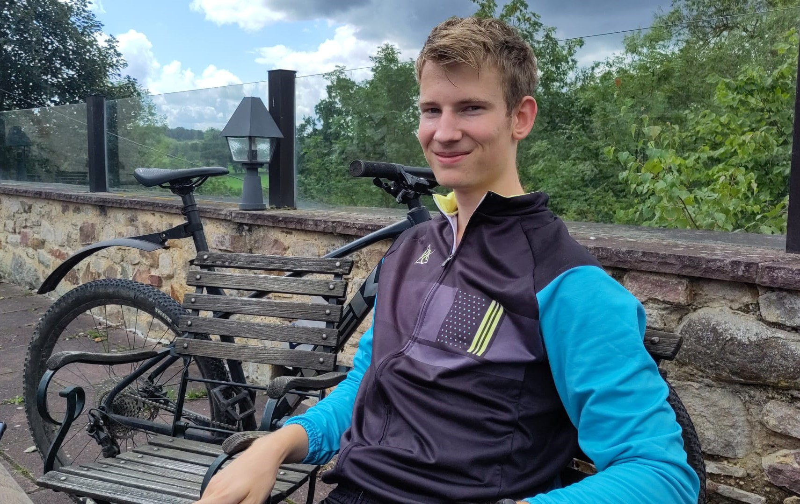

Dit ben ik

Hey, ik ben Stijn Postmus. Ik ben een 20 jarige student wonende in Arnhem. Ik ben bezig met het derde jaar van mijn studie Mechatronica op de Fontys hogeschool in Venlo. Voor mijn minor heb ik gekozen voor de minor Smart industry op de HAN in Nijmegen. Ik heb dus voor een externe minor gekozen.
Ik denk dat deze minor goed op mijn studie aansluit maar waar ik ook veel nieuwe dingen kan opdoen. In mijn studie doe ik niks met bedrijfskunde, maar ik ben wel benieuwd of het wat voor mij is. Daarnaast spreken industry 4.0 en automatisering mij aan. Ik denk dat deze minor een goede combinatie is van beide vlakken en daarom heb ik voor deze minor gekozen.